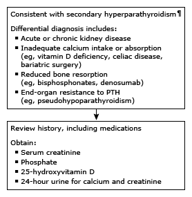

Evaluation of hypocalcemia and high parathyroid hormone in adults*

This algorithm is intended for use with additional UpToDate content on hypocalcemia.
PTH: parathyroid hormone. * The normal range for serum calcium is approximately 8.6 to 10.2 mg/dL (2.15 to 2.54 mmol/L) and for intact PTH approximately 10 to 65 pg/mL (1.1 to 6.9 pmol/L). Interpretation of a specific abnormal test result should be based upon the reference range reported with that result. Measured calcium concentration should be corrected for any abnormality in serum albumin, using a calcium correction formula. ¶ An elevated serum PTH occurs when the parathyroid gland appropriately responds to a reduced level of extracellular calcium.